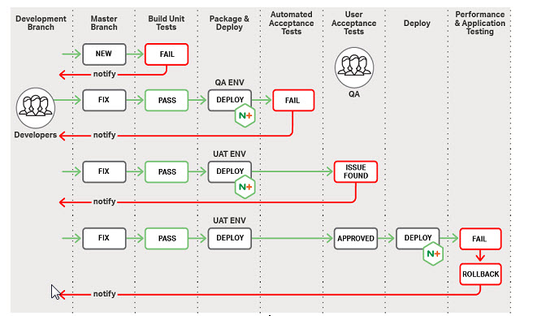
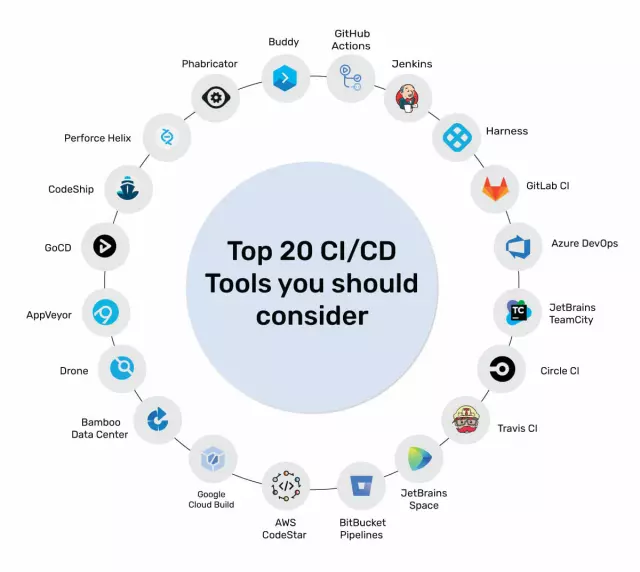

What is CI/CD?
CI/CD objectives:
- Providing a consistent and automated way of assembling, packaging and testing products or
applications
- Automation of deployment in different environments
- Minimizing errors and problems
What is Continuous Integration?
CI is all about integrating code and making sure it works.
What is Continuous Delivery?
Continuous delivery is an extension of continuous integration. Continuous Delivery ensures that the code is
ready and can be delivered at any time. Requires CI!
What is Continuous Deployment?
Continuous deployment is very similar to Continuous delivery. The only difference is that continuous delivery
require manual deployment (or more specificly approval).
The main purpose of CD is to release automatically every good build to the users.
Benefits from implementing CI/CD process in projects
Continuous Integration:
- Detecting bug in early stage - the earlier bug is detected, the less harm it makes
- Reduces bug count.
- The development process becomes more transparent - teams is notifed when build fails and what caused it.
- Efficient - since whole process is automated, manual testing is reduced.
Continuous Delivery & Deployment:
- Reduce the risk - deployment process may get complicated. It can consist of many steps. The more
complicated
the process, the greater the probability of human error. By automating this process we can assure, that
every deployment will look similar.
- Painless deployment, happier team.
- Reduces costs.
- A fully automated and transparent process.
- Releases may happend more frequently.
Costs of implementing CI/CD
CI / CD is an investment and as each investment has its own costs that are worth knowing
before implementing
this process.
Continuous Integration costs:
- Team needs to write automated tests.
- Server for automated tests.
- Developers need to merge their changes as often as possible.
Continuous Delivery & Deployment - Costs:
- Strong foundations in CI process.
- Testing culture must be at its best. CD process require the highest quality of tests.
- Documentation needs to be updated frequently to keep up after deployments.
- The whole process requires knowledge and requires an experience, otherwise it can cause more problems than
benefits.
How does CI/CD process looks in practice?
code > commit changes > build > unit test > deploy to staging machine > auto tests > deploy to production
Process may look like:

Top CI/CD Tools To Have in 2024
